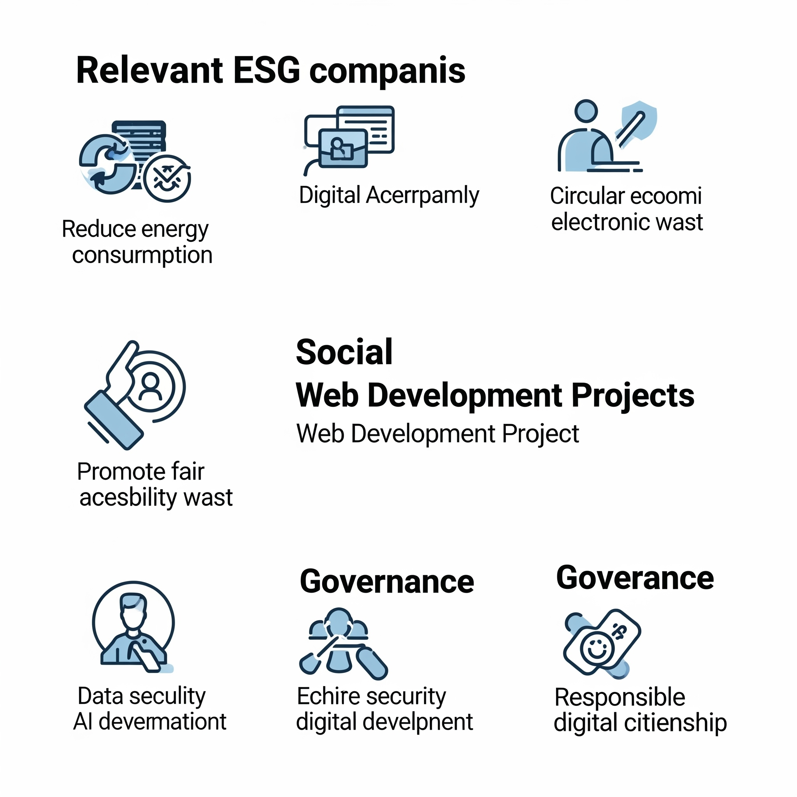

11.3. ASG más relevantes para empresas TIC y desarrollo web
Los aspectos ASG prioritarios para el sector TIC y el desarrollo de software incluyen:
- Eficiencia energética del código: Reducción del consumo mediante optimización de recursos, compresión de archivos y uso de arquitecturas serverless.
- Gestión de datos y privacidad: Cumplimiento del RGPD, cifrado de datos y aplicación de principios de seguridad desde el diseño.
- Seguridad y ciberresiliencia: Aplicación de buenas prácticas como las del estándar OWASP Top 10, auditorías de código y pruebas de seguridad.
- Accesibilidad e inclusión digital: Aplicación de las pautas WCAG para garantizar que las aplicaciones sean utilizables por todos los usuarios, independientemente de sus capacidades.
- Ética en algoritmos: Documentación de decisiones automatizadas, mitigación de sesgos y publicación de políticas de uso responsable de IA.
- Uso responsable de infraestructura: Elección de proveedores sostenibles y fomento de servicios en la nube con políticas de reciclaje electrónico.
Integrar estos aspectos en el ciclo de vida de una aplicación web no solo mejora su sostenibilidad, sino que también potencia su calidad, confianza del usuario y cumplimiento normativo.
